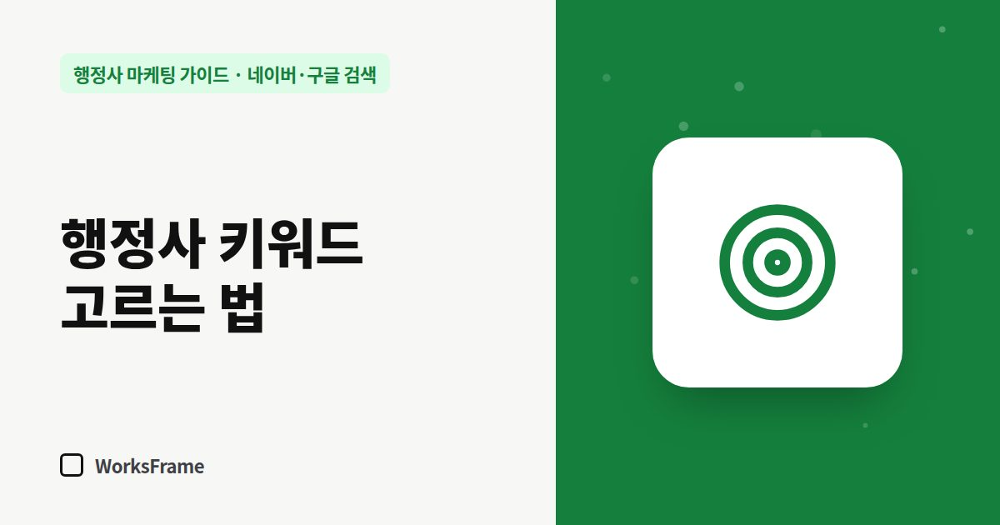

네이버·구글 검색
행정사 키워드 고르는 법 — 지역 + 업무 + 상황으로 조합하기
한 줄 답
‘행정사’ 같은 넓은 말 대신 ‘지역 + 업무 + 상황’을 조합한 구체적인 검색어를 고르세요. 상담에서 고객이 처음 한 말이 가장 좋은 키워드입니다.

“행정사”라는 단어로 1등을 하면 좋겠지만, 그 단어로 검색하는 사람은 시험 준비생, 학생, 기자일 수도 있습니다. 문의로 이어지는 검색어는 훨씬 구체적입니다.
키워드는 세 조각의 조합
| 조각 | 예 |
|---|---|
| 지역 | ○○시, ○○동, ○○역, ○○산업단지 |
| 업무 | 체류기간 연장, 공장등록, 농지전용, 면허취소 구제 |
| 상황 | 기간, 서류, 비용, 거절, 보완, 급하게 |
조합 예: - “○○시 공장등록 대행” - “E-7-4 전환 서류” - “체류기간 연장 거절 후 재신청” - “농지전용 허가 기간”
좋은 키워드의 조건
- 문의 의도가 있다 — “방법”, “서류”, “대행”, “비용” 같은 말이 붙는다
- 내가 실제로 하는 업무다
- 경쟁이 너무 세지 않다 — 검색해 보면 큰 사이트만 가득한 키워드는 뒤로
키워드 찾는 곳
- 상담 기록 — 고객이 처음 한 말 그대로가 가장 좋은 키워드입니다 (글감 만들기)
- 네이버·구글 자동완성 — 검색창에 업무명을 치고 뜨는 말들
- 연관 검색어 — 검색 결과 아래쪽
- 구글 서치 콘솔 실적 보고서 — 이미 내 사이트가 노출되는 검색어
키워드를 쓰는 곳
- 업무 안내 페이지 제목과 첫 문단
- 네이버 플레이스 대표 키워드와 소개글
- 블로그 글 제목
- 검색광고를 한다면 광고 키워드 (광고 전에 알아둘 것)
하지 말아야 할 것
- 같은 키워드를 본문에 억지로 반복하기
- 하지 않는 업무 키워드로 글 쓰기
- 키워드만 바꾼 비슷한 글을 여러 개 만들기 — 검색엔진이 낮게 평가할 수 있습니다
자주 묻는 질문
한 글에 키워드를 몇 개 넣어야 하나요?
한 글에는 핵심 주제 하나를 정하고, 그와 관련된 표현이 자연스럽게 들어가게 쓰세요. 개수를 세는 것보다 질문에 제대로 답하는 것이 중요합니다.
지역명을 꼭 넣어야 하나요?
방문 상담이 중요한 업무라면 넣는 것이 좋습니다. 전국 비대면 업무라면 업무와 상황 중심으로 써도 됩니다.